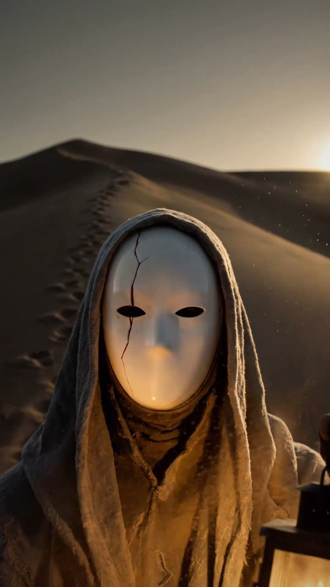
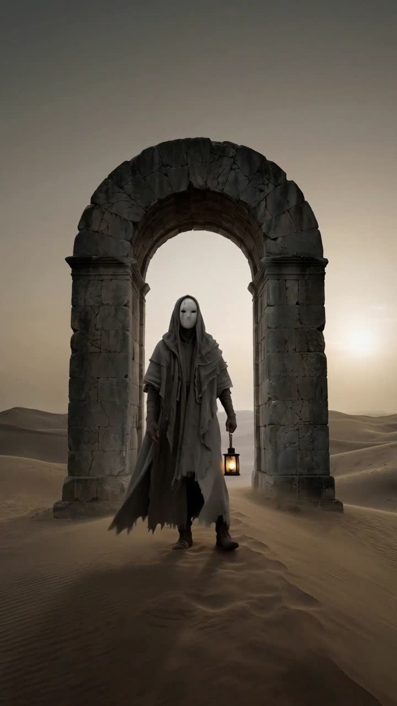
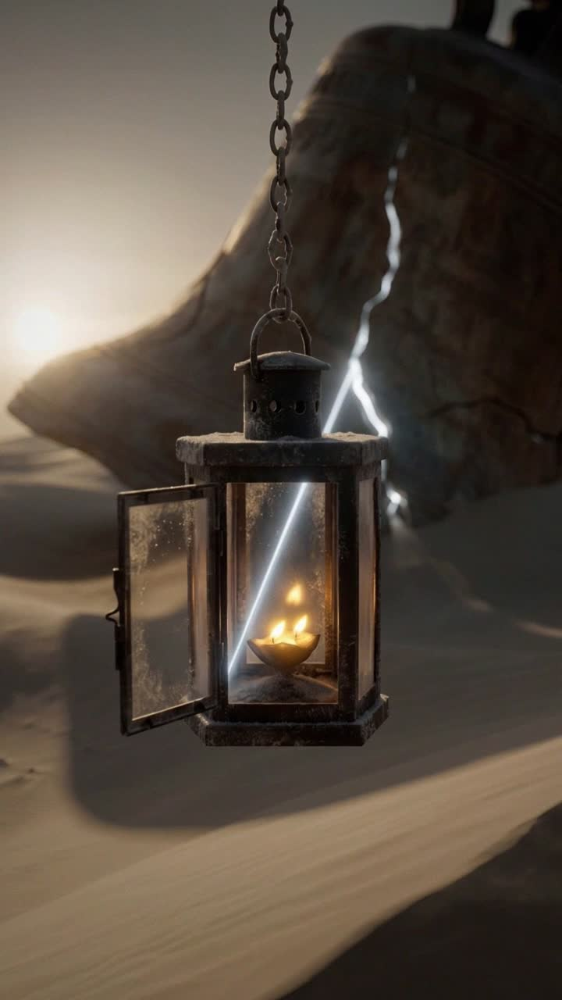
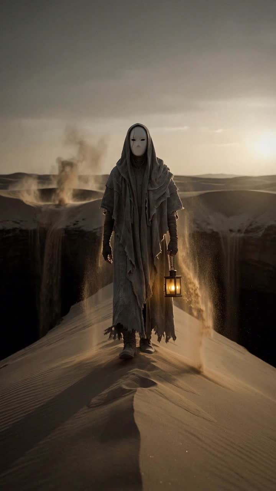
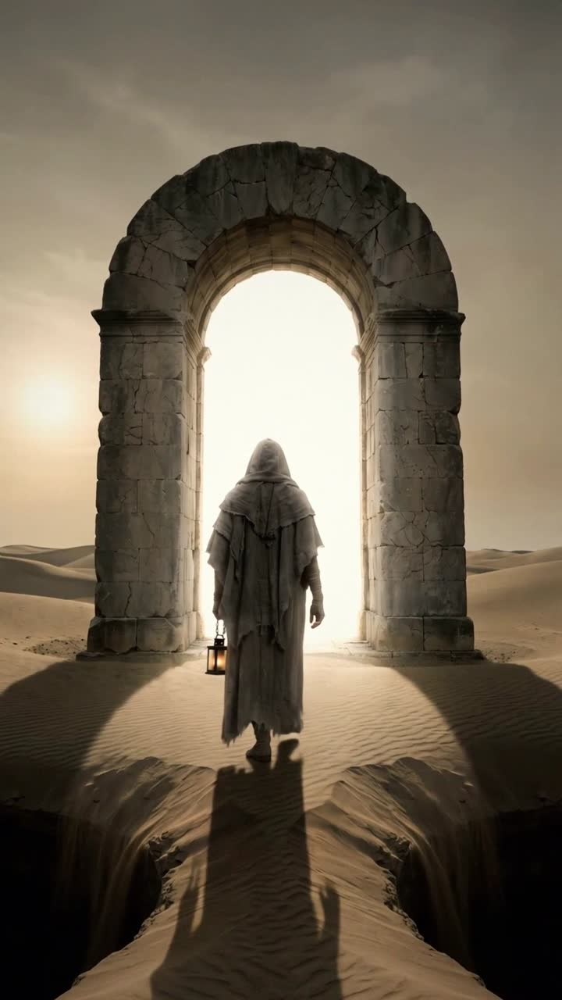
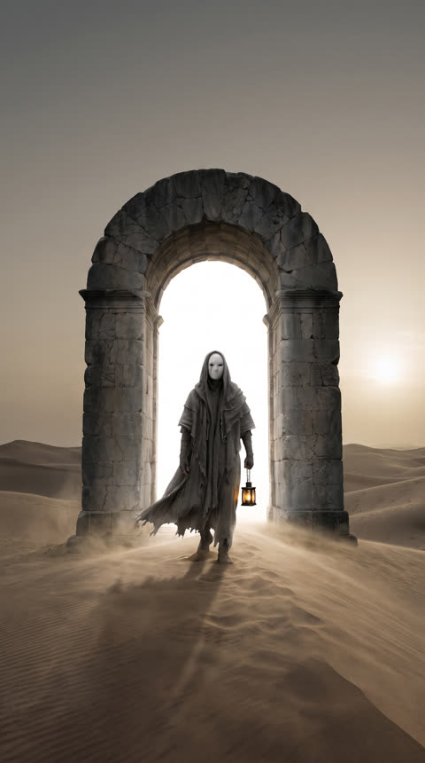
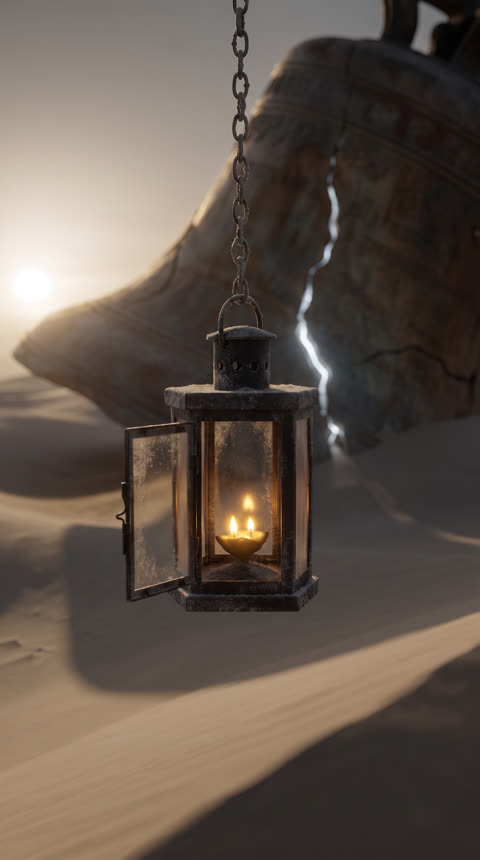
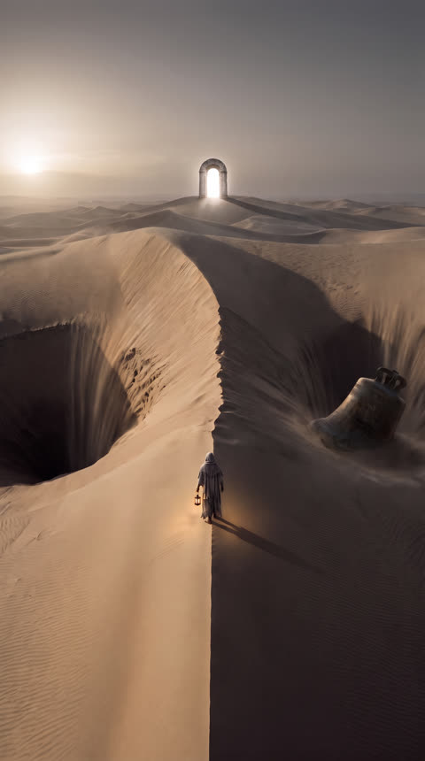
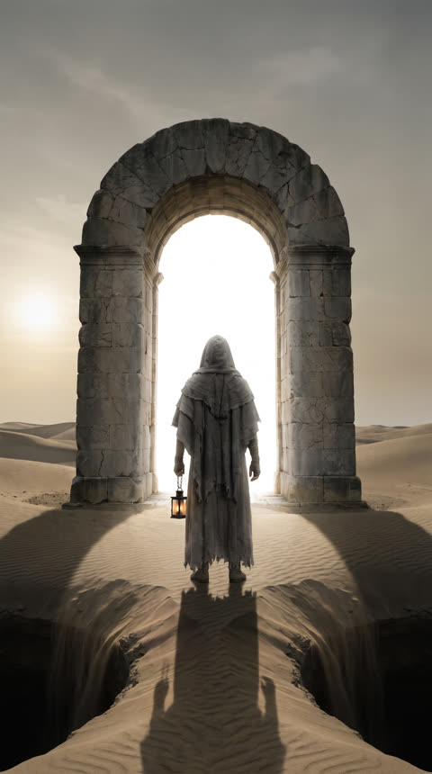

The Pilgrim
World 02
The Buried Bell.
He steps through the last door and into a dying desert. A masked traveler takes the last light from a sunken bell, and the dunes fall into the earth behind him. Hero, or destroyer?
- Written & directed
- Rishi Patlolla
- Format
- Vertical short film · 1080×1920 · 24 fps · no dialogue
- Series
- World 02 of 08 · continues from World 01
- Design & keyframes
- Nano Banana Pro, from the locked character sheet and a continuity map
- Motion
- Kling 4 and Seedance 2.5 via the Runway API
- Review
- Every keyframe checked against the map and the others; a human approves each one
- Orchestration
- Claude and GitHub Actions
- Edit & finishing
- FFmpeg assembly and end card, DaVinci Resolve finishing
- Music & sound
- Music by Rishi in DaVinci Resolve; sound designed and mixed for phones
One desert, one bell, one door





Every keyframe on one map
Before a single keyframe was made, the world got a map: one door in at the south dune, one door out on the far ridge, the bell just right of his path, the sun on the same side whenever he faces north. Every keyframe was checked against it, and redone when it broke it.
Approved keyframes




What the machine gave us,
and what we kept.
- Drew the map before the picturesDoors, the bell, the sun and the lantern hand were fixed on one plan first. The first round of keyframes was redone against it.
- Swapped a side view for a top viewA side-on shot of the ridge looked pasted together. The same moment from above reads clearly and keeps the geography.
- Cut two finished shotsTwo walk shots, over the crest and down the dune, were generated and then cut at the director's call.
- Hid what gave it awayOne shot was pushed in slightly to hide bare fingers by the lantern, and the last two shots were colour-matched to the rest.
- Removed the footstepsFive versions of designed footsteps were tried. In the end the film plays better without them, under music written for it.
- Joined the worldsIt opens on the white World 01 ended on, and closes the same way, into the door and a new end card.
How World 02 was made
World & map
A dying desert with a buried bell for its heart, and a continuity map: doors, bell, sun and the lantern always in his left hand.
Rishi · ClaudeKeyframes
Twelve keyframes checked against the map and each other; the first round redone, one side view replaced by a top view.
Nano Banana ProMotion
Short Kling 4 shots for the walk and the ember, Seedance 2.5 for the bell sinking and the walk through frozen time.
Runway API · GitHub ActionsEdit & finish
Cut, graded as one, music added by hand, footsteps tried and removed, end card designed, loudness checked for phones.
FFmpeg · DaVinci Resolve